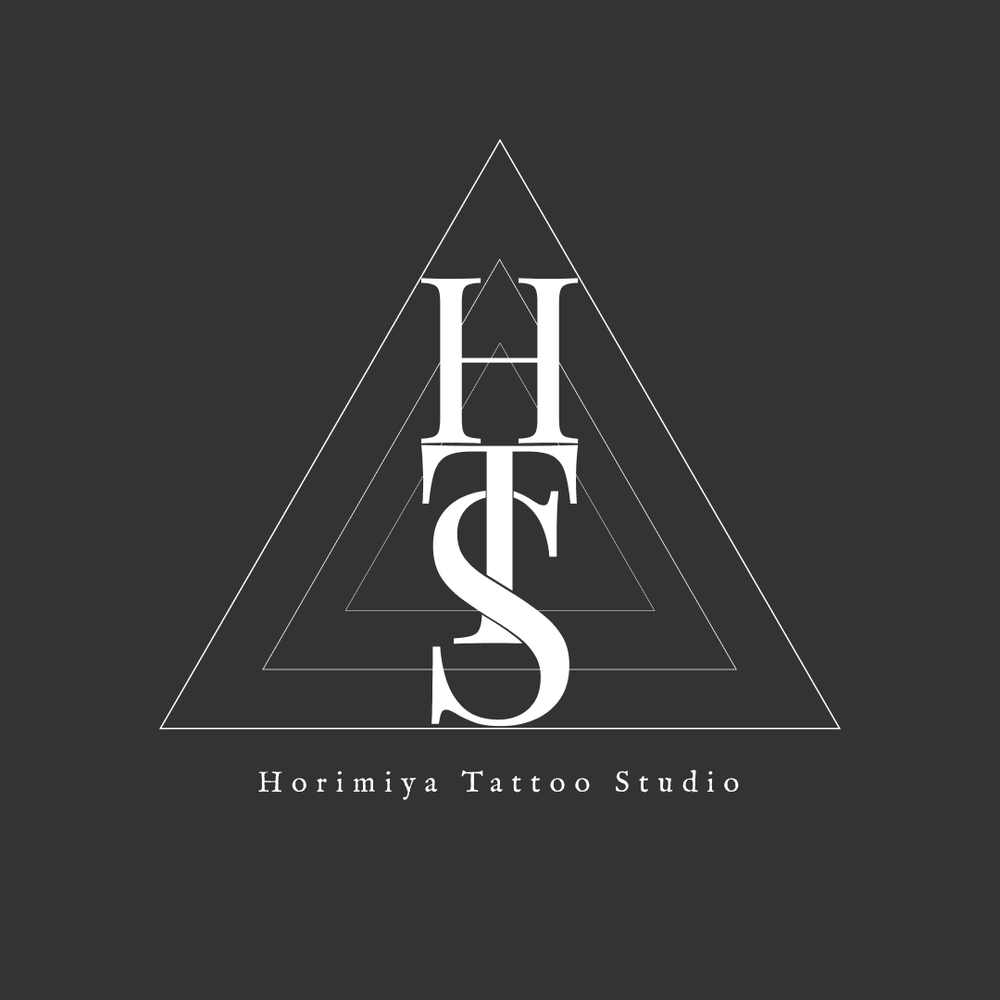

タトゥースタジオ
ロゴデザイン
Tattoo Studio — Logo & Identity

闇と美を、一つの記号に。鋭さと静けさが同居するスタジオの世界観を、最小限の線に凝縮しました。名刺からサインまで、あらゆる媒体で成立する視認性と象徴性を追求しています。
01課題 / The Challenge
「ダークだが下品にならない」——相反する印象を一つのマークで両立させることが求められました。
02アプローチ / The Approach
モチーフを削ぎ落とし、直線と余白の緊張感でスタジオの美学を表現。モノクロでも小サイズでも崩れない、記号としての強度を優先しました。
ロゴ 展開バリエーション
スクリーンショットを配置
スクリーンショットを配置
名刺 / アプリケーション
スクリーンショットを配置
スクリーンショットを配置